การเขียนโปรแกรมภาษา C สำหรับ AVR (ATmega328P): ตอนที่ 1#
Keywords: Atmel AVR MCU, ATmega328P, Bare-metal C Programming, AVR-GCC, Microchip Studio IDE
- ไมโครคอนโทรลเลอร์ AVR
- ไมโครคอนโทรลเลอร์ ATmega328P
- ซอฟต์แวร์สำหรับการเขียนโปรแกรมภาษา C/C++
- การคอมไพล์โค้ดภาษา C โดยใช้ AVR-GCC Toolchain
- การดีบักโปรแกรมโดยใช้ AVR-GDB
- การใช้งานหน่วยความจำของ AVR โดยคอมไพเลอร์
- การใช้ซอฟต์แวร์ Microchip Studio IDE
- การใช้งาน Wokwi AVR Simulator
▷ ไมโครคอนโทรลเลอร์: AVR#
ชิปไมโครคอนโทรลเลอร์ขนาด 8 บิต ของบริษัท Atmel มีซีพียูแบบ RISC ทำงานตามสถาปัตยกรรมที่เรียกว่า AVR ซึ่งเป็นผลงานการออกแบบโดยสองนักศึกษาที่สถาบันเทคโนโลยีแห่งนอร์เวย์ในปีค.ศ. 1984 และทั้งสองได้ร่วมก่อตั้งบริษัท ต่อมาในปีค.ศ. 2016 บริษัท Atmel ได้ถูกควบรวมกิจการโดยบริษัท Microchip Technology Inc.
ไมโครคอนโทรลเลอร์ AVR ของ Atmel ได้รับความนิยมในอดีตที่ผ่านมา สาเหตุหนึ่งอาจเป็นเพราะว่า ได้มีการเลือกใช้ชิปไมโครคอนโทรลเลอร์ของบริษัทนี้ เป็นตัวประมวลผลหลักของบอร์ด Arduino ซึ่งได้รับความนิยมอย่างมาก เช่น Arduino Uno / Nano / MEGA2560 เป็นต้น
ไมโครคอนโทรลเลอร์ ที่ทำงานตามสถาปัตยกรรม 8-bit AVR แบ่งออกได้หลายตระกูลดังนี้
- tinyAVR → tinyAVR 0-series / 1-series / 2-series
- megaAVR → megaAVR 0-series
- XMEGA
- AVR-Dx → AVR-DA / AVR-DB
นอกจากไมโครคอนโทรลเลอร์ 8 บิต AVR ทางบริษัท Atmel ก็ได้พัฒนาชิปไมโครคอนโทรลเลอร์ 32 บิต ในอดีต เช่น ตระกูล AVR32 และชิป 32 บิต ที่ใช้ซีพียูตระกูล ARM Cortex-M Series เช่น ATSAM3X8E และ ATSAMD21 ที่ได้นำมาใช้สำหรับบอร์ด Arduino เช่นกัน
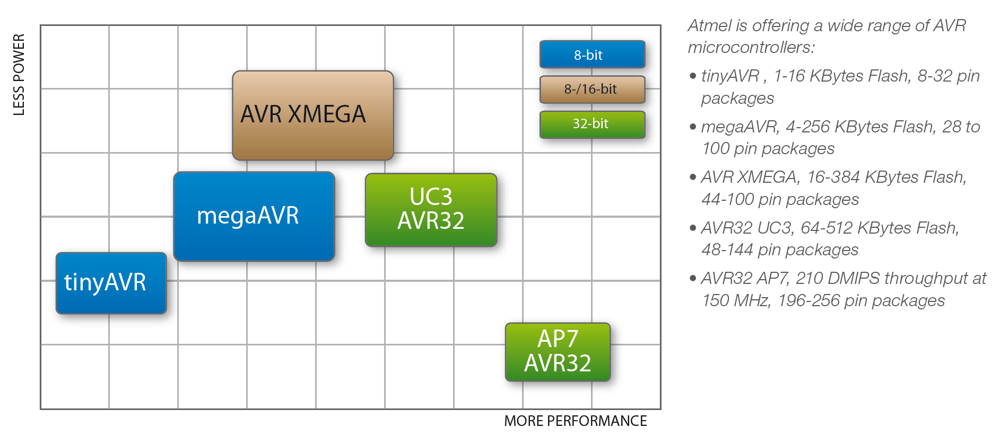
รูป: Atmel MCU Families (Source: Atmel/Microchip)
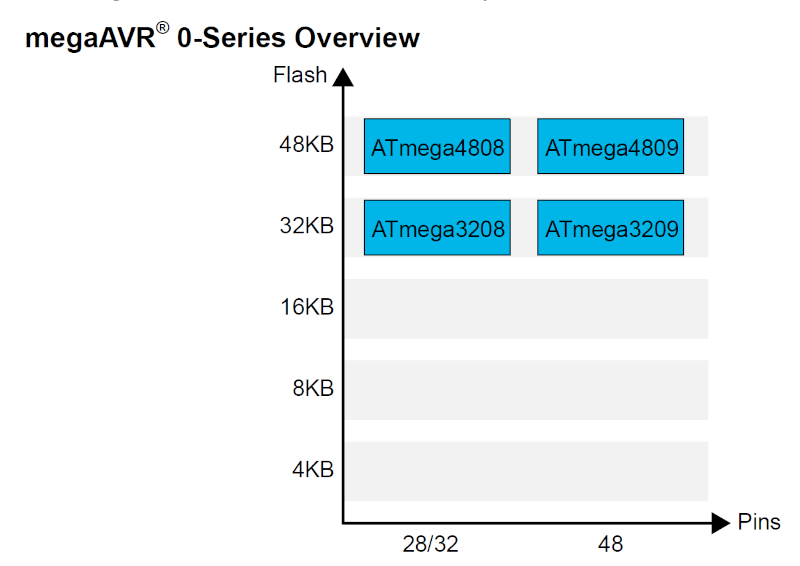
รูป: ชิปไมโครคอนโทรลเลอร์ที่เป็นสมาชิกในตระกูล megaAVR (0-Series)
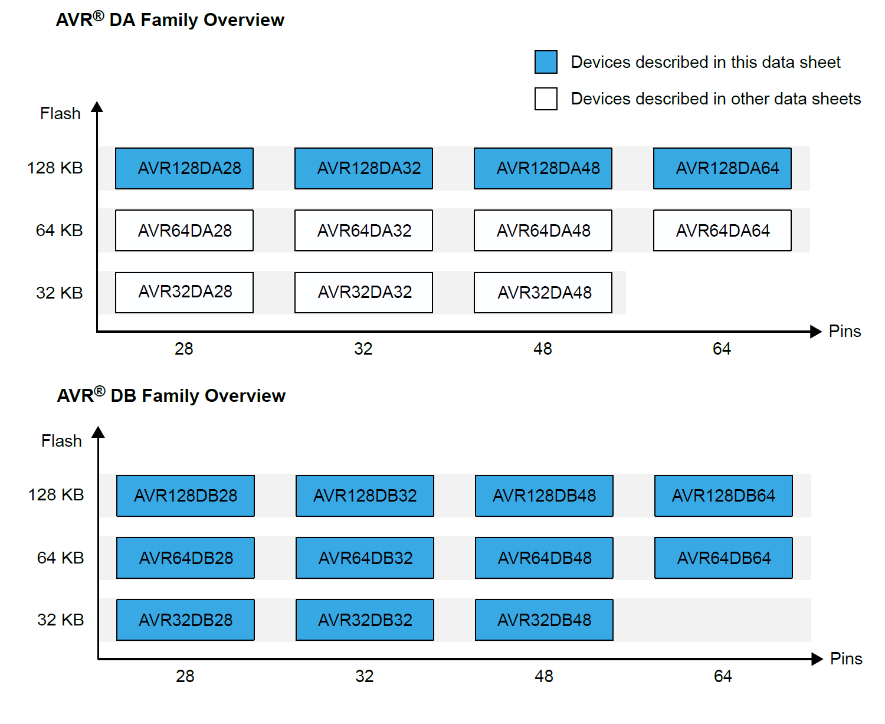
รูป: ชิปไมโครคอนโทรลเลอร์ที่เป็นสมาชิกในตระกูล AVR-DA/DB ซึ่งถือว่าเป็นตระกูลใหม่ล่าสุด เริ่มจำหน่ายในปีค.ศ. 2020 (Source: Atmel/Microchip)
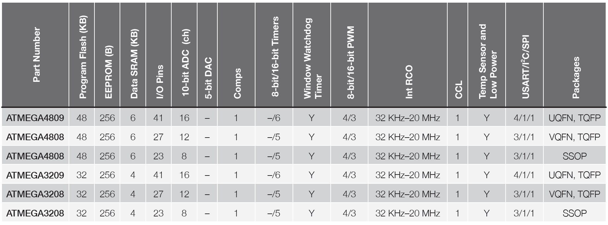
รูป: ตารางเปรียบเทียบ megaAVR (0-Series) MCUs (Source: Atmel/Microchip)
จากเอกสาร "AVR Microcontrollers Peripheral Integration" จะเห็นได้ว่า ในตารางมีการเปรียบเทียบความแตกต่างของคุณสมบัติและองค์ประกอบภายในของไมโครคอนโทรลเลอร์ ที่เป็นสมาชิกแต่ละตระกูลไว้เป็นตัวอย่าง เช่น ATtiny, ATmega, ATxmega
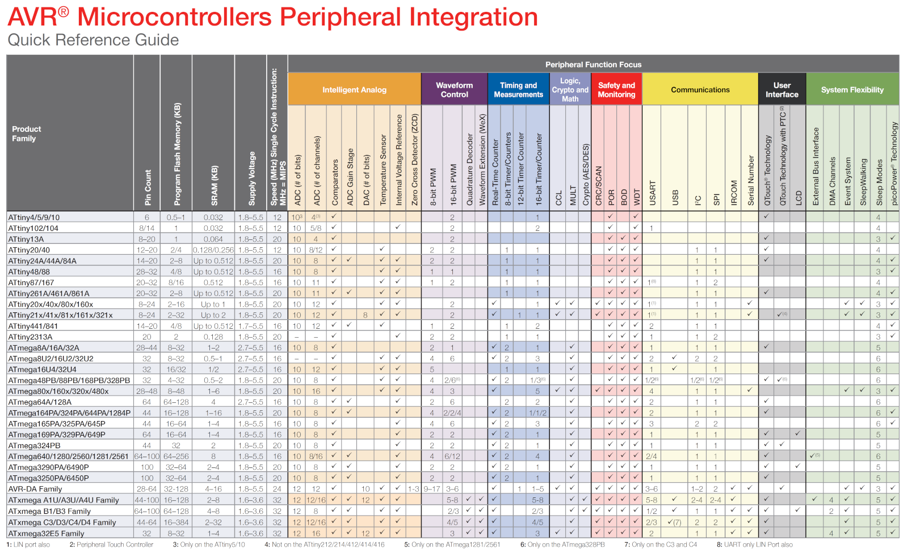
รูป: ตารางเปรียบเทียบ AVR MCUs (Source: Atmel/Microchip)
ข้อสังเกต: บอร์ด Arduino รุ่นใหม่ ๆ เกือบทั้งหมดได้เลือกใช้ชิปไมโครคอนโทรลเลอร์ 32 บิต แต่ก็ยังมีบางรุ่นที่ใช้ตัวประมวลผลแบบ 8 บิต คือ บอร์ด Arduino Uno WiFi rev2 และ Ardunio Nano Every ซึ่งใช้ชิป ATMEGA4809 (megaAVR 0-series) เป็นตัวประมวลผลหลัก
▷ ไมโครคอนโทรลเลอร์: ATmega328P#
ดังที่ได้กล่าวไปแล้ว บอร์ด Arduino Uno หรือ Nano มีชิปไมโครคอนโทรลเลอร์รุ่น ATmega328P เป็นตัวประมวลผลหลักของบอร์ด และถือว่า เป็นบอร์ดไมโครคอนโทรลเลอร์ที่ยังคงหาซื้อมาใช้งานได้ในยุคปัจจุบัน และราคาไม่แพง เหมาะสำหรับผู้เริ่มต้น และเนื่องจากมีการทำงานที่ไม่ซับซ้อน จึงไม่ยากเกินไปสำหรับการเรียนการเขียนโปรแกรมแบบ Bare-metal โดยใช้ภาษา C
ลองมาดูคุณสมบัติของ ATmega328P ซึ่งเป็นสมาชิกในตระกูล ATmega ดังนี้
- ทำคำสั่งตามสถาปัตยกรรมแบบ RISC
- มีการจัดการหน่วยความจำภายในตามสถาปัตยกรรมแบบที่เรียกว่า Modified Harvard Architecture (แยกหน่วยความจำสำหรับ Data Memory และ Program Memory และมีการใช้งานบัสสำหรับหน่วยความจำทั้งสองประเภท แต่สามารถเข้าถึงข้อมูลในหน่วยความจำสำหรับ Program Memory เช่น เขียนหรืออ่านข้อมูลได้)
- มีชุดคำสั่ง 131 คำสั่ง ซึ่งคำสั่งส่วนใหญ่ใช้เวลาในการทำคำสั่ง 1 ไซเคิล (CPU Cycle)
- มีวงจรตัวคูณ (8x8-bit Hardware Multiplier) โดยใช้เวลาในการคำนวณ 2 ไซเคิล
- ทำงานด้วยความถี่ 16MHz (max.) ที่แรงดันไฟเลี้ยง +5V
- หน่วยความจำภายใน แบ่งเป็น 3 ชนิด
- Flash: 32KB
- SRAM: 2KB
- EEPROM: 1KB
- มีวงจรตัวนับ Timer / Counter ทั้ง 8 บิต และ 16 บิต
- 8-bit: TIMER0, TIMER2
- 16-bit: TIMER1
- สามารถสร้างสัญญาณ PWM (Pulse Width Modulation) โดยใช้วงจร Timer / Counter ในโหมด PWM ได้สูงสุด 6 ช่องเอาต์พุต
- มีวงจร ADC (Analog-to-Digital Converter) ที่มีอินพุต 8 ช่องสัญญาณ และมีขนาดข้อมูลที่ได้ 10 บิต
- มีวงจร USART 1 ชุด
- มีวงจรสำหรับสื่อสารข้อมูลแบบบัส SPI และ I2C อย่างละ 1 ชุด ทำงานได้ในโหมด Master หรือ Slave
- มีวงจรเปรียบเทียบแรงดันแบบแอนะล็อก (On-chip Analog Comparator) 1 ชุด
- มีวงจรภายในสำหรับสร้างความถี่ (On-chip Oscillator) ได้ 8MHz
- มีวงจร WDT (Watchdog Timer)
- มีโหมดการทำงานเลือได้ 6 โหมด สำหรับประหยัดพลังงาน (Sleep Modes) นอกเหนือจากภาวะปรกติ ยกตัวอย่างเช่น Idle, Power-save, Power-down เป็นต้น
- ทำงานด้วยแรงดันไฟเลี้ยง ได้ในช่วง +2.7V ถึง +5.5V
- จำนวนขา I/O ที่ใช้งานได้คือ 23 ขา สำหรับตัวถังของไอซีแบบ ** 32-pin TQFP โดยแบ่งออกเป็นพอร์ตขนาด 8 บิต ได้แก่ PORTA, PORTB, PORTC, PORTD**
การศึกษาฟังก์ชันการทำงานต่าง ๆ ของไมโครคอนโทรลเลอร์ในระดับฮาร์ดแวร์ จะต้องอาศัยการทำความเข้าใจรายละเอียดในเอกสารที่เรียกว่า Datasheet ของไมโครคอนโทรลเลอร์จากผู้ผลิต
▷ ซอฟต์แวร์สำหรับการเขียนโปรแกรมภาษา C/C++#
ในการเขียนโปรแกรมสำหรับ AVR MCU โดยเลือกใช้ชิป ATmega328P เราสามารถเลือกใช้คอมไพเลอร์ GCC-AVR ซึ่งเป็น Open Source และใช้ร่วมกับซอฟต์แวร์ที่เป็น IDE (Integrated Development Environment) เช่น Arduino IDE หรือ Microchip Studio IDE
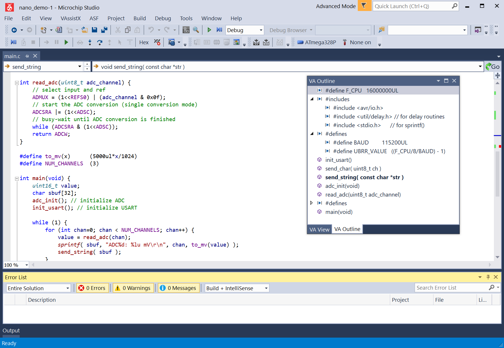
รูป: Microchip Studio IDE สาธิตการเขียนโค้ดภาษา C และใช้คำสั่งจากไลบรารี avr-libc สำหรับ ATmega328P

รูป: Arduino IDE และการเขียนโค้ดในไฟล์ main.c แทนการเขียนโค้ดในไฟล์ Arduino Sketch (.ino)
ข้อดีของการใช้ซอฟต์แวร์ Microchip Studio IDE (หรือเดิมชื่อ Atmel Studio 7 IDE) เพื่อการเรียนรู้การเขียนโค้ดภาษา C/C++ คือ ความสามารถในการรันคำสั่งของโปรแกรมที่ได้จากการคอมไพล์โค้ดสำหรับ AVR MCU ดังนั้นผู้ใช้สามารถดีบักโปรแกรมได้โดยใช้ตัวจำลองการทำงาน (Simulator-based Debugger) เช่น สั่งให้ทำคำสั่งแล้วหยุดชั่วคราวได้ เพื่อดูการเปลี่ยนแปลงรีจิสเตอร์ภายในของไมโครคอนโทรลเลอร์
คำแนะนำ: แม้ว่าซอฟต์แวร์ Microchip Studio IDE ยังมีการอัปเดตเป็นระยะ ๆ โดยบริษัท Microchip แต่บริษัทก็มีซอฟต์แวร์ MPLAB-X IDE เป็นอีกหนึ่งทางเลือก และได้พัฒนาให้รองรับการใช้งานสำหรับไมโครคอนโทรลเลอร์ของ Atmel เช่น ตระกูล AVR (8 บิต) และ SAM (32 บิต) เป็นต้น

รูป: MPLAB-X Desktop IDE (v6.0.0) สาธิตการเขียนโค้ดภาษา C สำหรับ AVR MCU
ข้อดีของการใช้ซอฟต์แวร์ Arduino IDE แม้ว่าจะไม่สามารถจำลองการทำงานของโค้ดได้ แต่ก็มีความสะดวกและง่ายในการใช้งาน การอัปโหลดไฟล์โปรแกรมที่ได้จากขั้นตอนการคอมไพล์โค้ดไปยังบอร์ด Arduino ผ่านสาย USB ก็ทำได้ง่าย (ชิป ATmega328P ต้องมีการใส่เฟิร์มแวร์ที่มีขนาดเล็ก เรียกว่า Arduino Bootloader ในหน่วยความจำภายใน Flash เอาไว้แล้ว และใช้งานร่วมกับโปรแกรม avrdude)
ซอฟต์แวร์ที่เป็นประเภท IDE เหล่านี้ มีการเรียกใช้งานโปรแกรมของ AVR-GCC Toolchain หรือ Atmel AVR GNU Toolchain ที่ทำงานแบบ CLI (Command Line Interface) โดยทั่วไปแล้ว ก็ประกอบไปด้วยโปรแกรมต่าง ๆ ดังนี้ ซึ่งโดยทั่วไปแล้ว ผู้ใช้จะไม่ได้เรียกใช้งานโปรแกรมเหล่านี้โดยตรง แต่จะทำงานในลักษณะเบื้องหลังให้กับซอฟต์แวร์ที่เป็น IDE
- C/C++ cross compiler:
avr-gcc - Assembler, linker, debugger:
binutils - Standard C libraries:
avr-libc - AVR Flash programmer:
avrdude
ในการเขียนโปรแกรมภาษา C สำหรับ AVR เราสามารถใช้ฟังก์ชันต่าง ๆ ที่มีอยู่ในไลบรารี avr-libc 2.0.0 ซึ่งมีการแบ่งกลุ่มในการใช้งาน เช่น
<avr/io.h>: AVR device-specific IO definitions<util/delay.h>: functions for busy-wait delay loops<avr/interrupt.h>: AVR interrupts<avr/wdt.h>: Watchdog timer handling<avr/power.h>: Power Reduction Management
▷ การคอมไพล์โค้ดภาษา C โดยใช้ AVR-GCC Toolchain#
หากใช้ระบบปฏิบัติการ Linux เช่น Ubuntu หรือใช้งาน Windows ร่วมกับ WSL2 (Windows Subsystem for Linux) ก็สามารถทำคำสั่งใน Terminal เพื่อติดตั้ง AVR-GCC Toolchain ได้ดังนี้
$ sudo apt-get install binutils-avr gcc-avr gdb-avr avr-libc avrdude
ตัวอย่างโค้ด: main.c สาธิตการเขียนโปรแกรมเพื่อทำให้วงจร LED ที่ต่อเข้ากับขา PORTB5 (PB5)
บนบอร์ด Arduino Uno หรือ Nano กระพริบได้
#define F_CPU 16000000UL // set the CPU speed to 16MHz
#include <avr/io.h>
#include <util/delay.h> // for _delay_ms();
#define BLINK_DELAY_MS 500 /* in msec */
int main (void) {
// Set pin 5 of PORTB (PORTB5 pin) for output.
DDRB |= _BV(DDB5);
// Output low at PORTB5 pin.
PORTB &= ~_BV(PORTB5);
// Enter an endless loop.
while (1) {
// Toggle output.
PORTB ^= _BV(PORTB5);
// Call delay_ms().
_delay_ms( BLINK_DELAY_MS );
} //end while
}
ตัวอย่างการทำคำสั่งเพื่อคอมไพล์โค้ดในไฟล์ main.c ให้เป็นไฟล์ main.elf และเป็น main.hex ตามลำดับ
# Set the target device (use ATmega328p).
$ TARGET_MCU=atmega328p
# Compile the source code file (main.c) into an object file,
# optimize for size (-Os) and enable all warnings (-Wall).
$ avr-gcc -g -Wall -Os -mmcu=${TARGET_MCU} -c main.c
# Link the object file and libraries into an ELF file
# and also generate a linker map file.
$ avr-gcc -g -mmcu=${TARGET_MCU} -Wl,-Map,avr.map -lc -lm -o main.elf main.o
# Convert the ELF file into a .hex file (Intel hex file).
$ avr-objcopy -j .text -j .data -O ihex main.elf main.hex
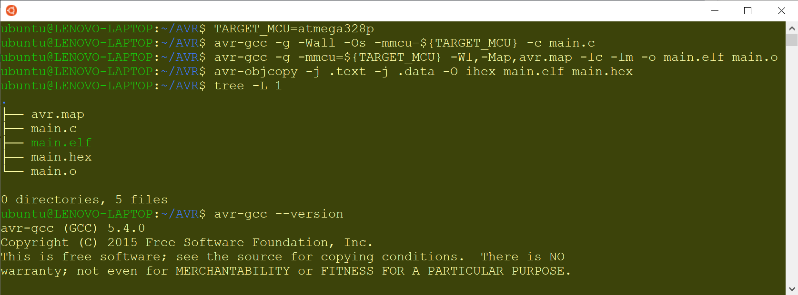
รูป: สาธิตการทำคำสั่งใน Linux Terminal
สำหรับผู้ใช้ Windows หากได้เคยติดตั้งใช้งานซอฟต์แวร์ Arduino IDE ไว้แล้ว จะเห็นว่า มีไดเรกทอรีต่าง ๆ ที่เก็บโปรแกรมคำสั่งสำหรับ AVR-GCC Toolchain อยู่ภายใต้
C:\Users\%USERNAME%\AppData\Local\Arduino15\packages\arduino\tools
มีไดเรกทอรีย่อย เช่น avr-gcc และ avrdude และให้สังเกตไดเรกทอรีย่อยที่อยู่ภายใน
หากต้องการลองทำคำสั่งแบบ CLI สำหรับ Windows ก็มีตัวอย่างดังนี้ ซึ่งจะต้องมีการกำหนดหรืออัปเดทตัวแปร PATH
ของระบบ สำหรับการเรียกใช้โปรแกรม ( หมายเลขเวอร์ชันอาจมีการเปลี่ยนแปลงได้ ขึ้นอยู่กับอัปเดทล่าสุด )
set ARDUINO_TOOLS=C:\Users\%USERNAME%\AppData\Local\Arduino15\packages\arduino\tools
set AVR_GCC=%ARDUINO_TOOLS%\avr-gcc\7.3.0-atmel3.6.1-arduino7\bin
set AVRDUDE=%ARDUINO_TOOLS%\avrdude\6.3.0-arduino17\bin
set PATH=%PATH%;%AVR_GCC%;%AVRDUDE%
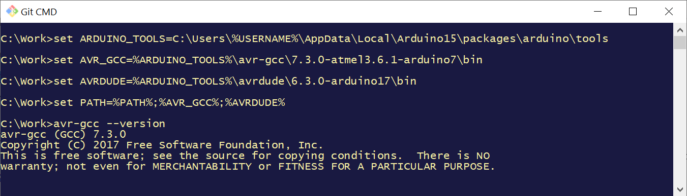
รูป: สาธิตการทำคำสั่งใน Windows Command Terminal
# set target MCU
> set TARGET_MCU=atmega328p
# compile the source code file (main.c) into an object file
# optimize for size, enable all warnings
> avr-gcc -g -Wall -Os -mmcu=%TARGET_MCU% -c main.c
# link the object file and libraries into an ELF file
> avr-gcc -g -mmcu=%TARGET_MCU% -Wl,-Map,avr.map -lc -lm -o main.elf main.o
# convert the ELF file into a .hex file (Intel hex file)
> avr-objcopy -j .text -j .data -O ihex main.elf main.hex
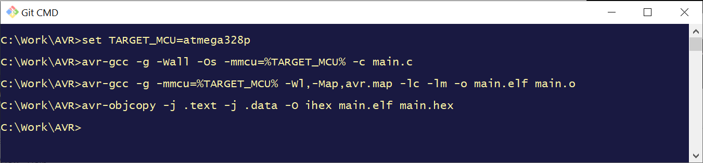
รูป: สาธิตการทำคำสั่งใน Windows Command Terminal คอมไพล์โค้ด main.c ให้เป็นไฟล์ main.hex
ลองทำคำสั่ง avrdude ซึ่งจะปรากฎข้อความเอาต์พุตเป็นตัวอย่างดังนี้
>avrdude
Usage: avrdude [options]
Options:
-p <partno> Required. Specify AVR device.
-b <baudrate> Override RS-232 baud rate.
-B <bitclock> Specify JTAG/STK500v2 bit clock period (us).
-C <config-file> Specify location of configuration file.
-c <programmer> Specify programmer type.
-D Disable auto erase for flash memory
-i <delay> ISP Clock Delay [in microseconds]
-P <port> Specify connection port.
-F Override invalid signature check.
-e Perform a chip erase.
-O Perform RC oscillator calibration (see AVR053).
-U <memtype>:r|w|v:<filename>[:format]
Memory operation specification.
Multiple -U options are allowed, each request
is performed in the order specified.
-n Do not write anything to the device.
-V Do not verify.
-u Disable safemode, default when running from a script.
-s Silent safemode operation, will not ask you if
fuses should be changed back.
-t Enter terminal mode.
-E <exitspec>[,<exitspec>] List programmer exit specifications.
-x <extended_param> Pass <extended_param> to programmer.
-y Count # erase cycles in EEPROM.
-Y <number> Initialize erase cycle # in EEPROM.
-v Verbose output. -v -v for more.
-q Quell progress output. -q -q for less.
-l logfile Use logfile rather than stderr for diagnostics.
-? Display this usage.
avrdude version 6.3-20190619, URL: <http://savannah.nongnu.org/projects/avrdude/>
เมื่อได้เชื่อมต่อบอร์ด Arduino กับคอมพิวเตอร์ผู้ใช้แล้ว ลองทำคำสั่งต่อไปนี้ (สังเกต: หมายเลขพอร์ตอนุกรม)
> avrdude -C %AVRDUDE%/../etc/avrdude.conf -v -p atmega328p -c arduino ^
-b 115200 -P COM9 -D -Uflash:w:main.hex:i
จากตัวอย่างการทำคำสั่ง avrdude จะเห็นว่า มีการกำหนดค่าต่าง ๆ ในการใช้งานดังนี้
-C <config-file>ระบุไฟล์ Configuration file สำหรับการทำงานของโปรแกรม-p <part-number>ระบุชื่ออุปกรณ์ (Part Number) สำหรับชิปเป้าหมาย เช่นatmega328p-c <programmer>ระบุวิธีการอัปโหลดไฟล์สำหรับไมโครคอนโทรลเลอร์ เช่น ถ้าเป็นarduinoหมายถึง วิธีสื่อสารกับ Arduino bootloader ในชิปไมโครคอนโทรลเลอร์ และเชื่อมต่อผ่านทางพอร์ตอนุกรม Serial-b <baudrate>กำหนดค่า Baudrate เช่น 115200 สำหรับเชื่อมต่อกับ Arduino bootloader-P <port>เลือกพอร์ตอนุกรมที่ตรงกับบอร์ดไมโครคอนโทรเลอร์ที่เชื่อมต่ออยู่กับคอมพิวเตอร์ผู้ใช้ เช่นCOM9ในตัวอย่าง-Dไม่ทำการลบข้อมูลในหน่วยความจำแฟลซโดยอัตโนมัติ-Uทำคำสั่งเขียนหน่วยความจำ เช่น เขียนข้อมูลจากไฟล์main.hex(Intel hex format) ไปยังหน่วยความจำแฟลซภายในชิปไมโครคอนโทรลเลอร์
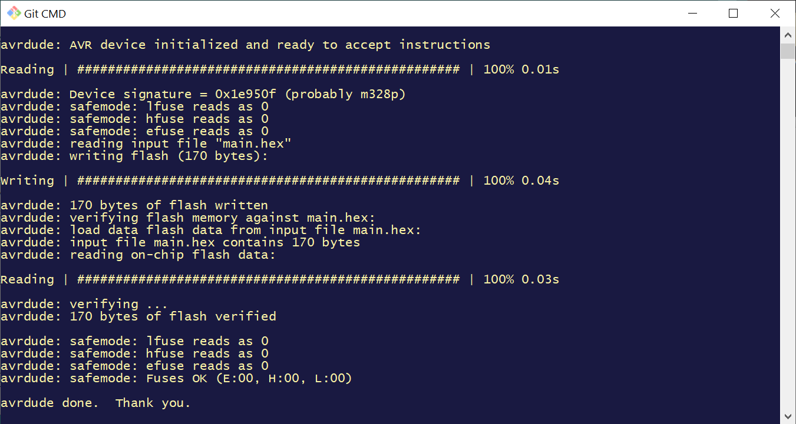
รูป: สาธิตการทำคำสั่งใน Windows Command Terminal เรียกใช้โปรแกรม avrdude
เพื่ออัปโหลดไฟล์ main.hex ไปยังบอร์ด Arduino Nano 3.0 ที่เชื่อมต่อกับคอมพิวเตอร์ผู้ใช้
ผ่านทาง USB-to-Serial / Virtual COM port หมายเลข COM9
▷ การดีบักโปรแกรมโดยใช้ AVR-GDB#
เริ่มต้นด้วยโค้ดตัวอย่างสำหรับสาธิตการดีบักการทำงานด้วยโปรแกรม AVR-GDB ดังนี้
(แตกต่างจากตัวอย่างโค้ดเดิม คือ มีการเพิ่มตัวแปรภายนอก counter และไม่มีการเรียกใช้ฟังก์ชันสำหรับหน่วงเวลา)
#define F_CPU 16000000UL // set the CPU speed to 16MHz
#include <avr/io.h>
// global variable
uint16_t counter = 0;
int main (void) {
// set pin 5 of PORTB for output*
DDRB |= _BV(DDB5);
// Output low at PORTB5 pin.
PORTB &= ~_BV(PORTB5);
while(1) {
// Increment counter by 1.
counter += 1;
// Toggle output.
PORTB ^= _BV(PORTB5);
} //end while
}
ทำคำสั่งเพื่อคอมไพล์โค้ดในไฟล์ main.c เป็นไฟล์ main.elf
$ avr-gcc -g -Wall -Os -mmcu=atmega328p main.c \
-Wl,-Map,main.map -lc -lm -o main.elf
เรียกใช้โปรแกรม avr-gdb สำหรับไฟล์ main.elf
$ avr-gdb ./main.elf
GNU gdb (GDB) 8.1.0.20180409-git
Copyright (C) 2018 Free Software Foundation, Inc.
...
Reading symbols from ./main.elf...done.
(gdb)
จากนั้นทำคำสั่ง target sim เพื่อทำให้ตัวจำลองการทำงาน Simulator เริ่มทำงาน
และทำคำสั่ง load เพื่อโหลดโปรแกรม main.elf และพร้อมทำงานเริ่มต้นที่แอดเดรส 0x0
(gdb) target sim
Connected to the simulator.
(gdb) load
Loading section .text, size 0xba lma 0x0
Start address 0x0
Transfer rate: 1488 bits in <1 sec.
ทำคำสั่ง set listsize <lines> เพื่อกำหนดจำนวนบรรทัดของโค้ดที่ต้องการจะแสดงผลในแต่ละครั้ง
เมื่อทำคำสั่ง list เพื่อดูบางส่วนของโค้ดในโปรแกรมหลัก
หากทำคำสั่ง list <func-name> จะแสดงโค้ดที่เกี่ยวข้องกับฟังก์ชันตามชื่อฟังก์ชันที่ระบุไว้
เช่น ฟังก์ชัน main
(gdb) set listsize 10
(gdb) list main
4 // global variable
5 uint16_t counter = 0;
6
7 int main (void) {
8 // set pin 5 of PORTB for output*
9 DDRB |= _BV(DDB5);
10 // Output low at PORTB5 pin.
11 PORTB &= ~_BV(PORTB5);
12 while(1) {
13 // Increment counter by 1.
(gdb)
หรือแสดงโค้ดตามช่วงของเลขบรรทัดที่ระบุ เช่น จากบรรทัดที่ 7 ไปจนถึง 20
(gdb) list 7,20
7 int main (void) {
8 // set pin 5 of PORTB for output*
9 DDRB |= _BV(DDB5);
10 // Output low at PORTB5 pin.
11 PORTB &= ~_BV(PORTB5);
12 while(1) {
13 // Increment counter by 1.
14 counter += 1;
15 // Toggle output.
16 PORTB ^= _BV(PORTB5);
17 } //end while
18 }
19
ถัดไปเป็นการทำคำสั่ง break <line-number> เพื่อกำหนดให้
ประโยคคำสั่งในโค้ดตามหมายเลขบรรทัดที่ระบุเป็นตำแหน่งของ Breakpoint
เมื่อสั่งให้รันโปรแกรมต่อไป หากมาถึงบรรทัดดังกล่าว จะหยุดการรันโปรแกรมโดยอัตโนมัติ
คำสั่งสำหรับการรันโปรแกรมคือ run และถ้ามีการหยุดชั่วคราวแล้วต้องการรันโค้ดในประโยคคำสั่งถัดไป
ให้ทำคำสั่ง next หรือทำคำสั่ง continue ไปจนกว่าจะถึงตำแหน่งถัดไปที่เป็น Breakpoint
(gdb) break 14
Breakpoint 1 at 0x96: file main.c, line 14.
(gdb) run
Starting program: /home/ubuntu/AVR/main.elf
Breakpoint 1, main () at main.c:14
14 counter += 1;
(gdb) next
16 PORTB ^= _BV(PORTB5);
ถ้าต้องการแสดงค่าในขณะนั้นของตัวแปรหรือรีจิสเตอร์ในโปรแกรม ให้ใช้คำสั่ง print
(gdb) continue
Continuing.
Breakpoint 1, main () at main.c:14
14 counter += 1;
(gdb) continue
Continuing.
Breakpoint 1, main () at main.c:14
14 counter += 1;
(gdb) print /u counter
$1 = 2
จากตัวอย่างจะเห็นได้ว่า มีการกำหนดให้บรรทัดที่ 14 เป็นตำแหน่งของ Breakpoint และ
เมื่อทำคำสั่ง continueหลายครั้ง ค่าตัวของตัวแปร counter
(แสดงผลเป็นเลขจำนวนเต็มแบบ unsigned) จะเพิ่มขึ้น
(gdb) continue
Continuing.
Breakpoint 1, main () at main.c:14
14 counter += 1;
(gdb) print /x PORTB
$2 = 0x20
(gdb) continue
Continuing.
Breakpoint 1, main () at main.c:14
14 counter += 1;
(gdb) print /x PORTB
$3 = 0x0
เมื่อทำคำสั่ง continue หลายครั้ง ก็จะเห็นได้ว่า ค่าของรีจิสเตอร์ PORTB (แสดงผลในเลขฐานสิบหก) มีการเปลี่ยนแปลง เช่นกัน
ถ้าต้องการให้แสดงค่าของตัวแปรหรือรีจิสเตอร์ของไมโครคอนโทรลเลอร์โดยอัตโนมัติ เมื่อมีการหยุดโดย Breakpoint
ให้ทำคำสั่ง display ตามรูปแบบต่อไปนี้ เช่น ดูค่าของตัวแปร counter และรีจิสเตอร์ PORTB
(gdb) set PORTB = 0x0
(gdb) display /x PORTB
1: /x PORTB = 0x0
(gdb) display /u counter
2: /u counter = 0
(gdb) continue
Continuing.
Breakpoint 1, main () at main.c:14
14 counter += 1;
1: /x PORTB = 0x20
2: /u counter = 1
(gdb) continue
Continuing.
Breakpoint 1, main () at main.c:14
14 counter += 1;
1: /x PORTB = 0x0
2: /u counter = 2
(gdb)
หากต้องการจบการทำงานของ AVR-GDB ให้กดปุ่ม Ctrl+C
คำแนะนำ: คำสั่งที่เกี่ยวข้องกับ AVR-GDB สามารถศึกษาเพิ่มได้จาก "Arduino/AVR GDB Cheat Sheet by Uri Shaked" (pdf)
▷ การใช้งานหน่วยความจำของ AVR โดยคอมไพเลอร์#
หน่วยความจำภายในของชิป AVR แบ่งเป็นหน่วยความจำแบบแฟลช (Flash Memory) หน่วยความจำแบบ SRAM และหน่วยความจำแบบ EEPROM
หน่วยความจำแบบ SRAM ของ AVR แบ่งเป็น 2 กรณี คือ หน่วยความจำภายใน (On-chip SRAM) และอาจมีหน่วยความจำภายนอก (External SRAM) สำหรับชิปบางรุ่น และสามารถจำแนกได้ตามรูปแบบการใช้งานสำหรับข้อมูลและตัวแปร ดังนี้
- ตัวแปรภายนอก (Global Variables) ทั้งแบบที่มีการกำหนดค่าเริ่มต้น และแบบไม่มีการกำหนดค่าเริ่มต้นเมื่อประกาศใช้ตัวแปร
และตัวแปรภายในฟังก์ชัน (Local Variables) ที่ได้ประกาศเป็น
static - ตัวแปรที่ใช้หน่วยความจำแบบ Heap เมื่อใช้คำสั่ง
malloc()และfree()เป็นต้น - ตัวแปรที่ใช้หน่วยความจำแบบ Stack เช่น ตัวแปรภายในฟังก์ชัน รวมถึงการเรียกใช้ฟังก์ชัน เป็นต้น
ตัวแปรภายนอกและตัวแปรภายในแบบ static (ที่ไม่ใช่ Automatic Variables)
จะถูกสร้างขึ้นก่อนการเริ่มต้นทำงานของฟังก์ชัน main()
ตัวแปรประเภทนี้ จะไม่ใช้หน่วยความจำแบบ Stack หรือ รีจิสเตอร์ของซีพียู
แต่จะใช้หน่วยความจำแยกไว้ (ซึ่งก็เป็นส่วนหนึ่งของ SRAM) แบ่งเป็นสองส่วน
.dataสำหรับตัวแปรที่มีการกำหนดค่าเริ่มต้นไม่เท่ากับ 0 (non-zero initialized) เมื่อประกาศใช้ตัวแปร หน่วยความจำสำหรับตัวแปรประเภทนี้ จะได้ค่าคงที่หรือค่าเริ่มต้นจากข้อมูลที่เก็บอยู่ในหน่วยความจำแฟลช และการจัดการในส่วนนี้เป็นหน้าที่ของ C Startup Code.bssสำหรับตัวแปรที่มีการกำหนดค่าเริ่มต้นเท่ากับ 0 หรือ ไม่มีการกำหนดค่าเริ่มต้นให้ (unintialized) เมื่อประกาศใช้ตัวแปร และตัวแปรประเภทนี้ จะถูกกำหนดค่าเริ่มต้นโดยคอมไพเลอร์ให้มีค่าเป็น 0 โดยอัตโนมัติ
ตัวแปรสองประเภทนี้ จะเข้าถึงได้โดยการระบุแอดเดรสของตัวแปรในหน่วยความจำ ซึ่งคอมไพเลอร์จะทราบตำแหน่งหรือแอดเดรสเหล่านี้เมื่อทำขั้นตอนคอมไพล์สำหรับชิป AVR
C Startup Code เป็นโค้ดที่ทำหน้าที่เริ่มต้นก่อนส่งต่อให้ฟังก์ชัน main()
นอกจากการกำหนดค่าเริ่มต้นให้หน่วยความจำในส่วนที่เป็น .data และ .bss
แล้วยังมีหน้าที่อีก เช่น
- กำหนดค่าเริ่มต้นให้รีจิสเตอร์ที่เป็น Stack Pointer (SP) ถ้าเป็น AVR ก็จะเริ่มที่แอดเดรสสูงสุด
(
RAMEND) และเมื่อมีการใช้งาน Stack ด้วยคำสั่งpushค่าของ SP จะลดลง และเพิ่มขึ้นเมื่อทำคำสั่งpop - ตั้งค่าเริ่มต้นการทำงานของซีพียู และวงจรภายในต่าง ๆ ที่เกี่ยวข้อง
การคอมไพล์โค้ดด้วย avr-gcc จะได้ไฟล์โปรแกรมแบบไบนารี .elf แต่จะต้องมีการแปลงให้เป็นไฟล์ .hex อีกขั้นตอนหนึ่ง
จึงจะนำไปใช้กับชิปไมโครคอนโทรลเลอร์ได้ ไฟล์โปรแกรม .elf ภายในมีการแบ่งออกเป็นส่วนต่าง ๆ และสามส่วนที่สำคัญและเกี่ยวข้องกับการใช้งานหน่วยความจำของ AVR ได้แก่
.text(Program Code) เป็นส่วนที่เก็บคำสั่งต่าง ๆ ของโปรแกรม และจะถูกนำไปเขียนลงในหน่วยความจำแฟลชของชิป AVR ขนาดของส่วนนี้เป็นตัวระบุว่า มีขนาดของโปรแกรมกี่ไบต์.dataเป็นส่วนที่เกี่ยวข้องกับการใช้งานตัวแปรภายนอกและตัวแปรภายในแบบstaticที่มีการกำหนดค่าเริ่มต้น บางกรณีก็มีการจำแนกย่อยออกเป็น.rodataสำหรับข้อมูลที่อ่านได้เท่านั้น (read-only).bssเป็นส่วนที่เกี่ยวข้องกับการใช้งานตัวแปรภายนอกและตัวแปรภายในแบบstaticที่ไม่มีการกำหนดค่าเริ่มต้น
ขนาดและความต้องการใช้หน่วยความจำในแต่ละส่วน สามารถทราบได้โดยทำคำสั่ง avr-size
ตัวอย่างโค้ดสำหรับการสาธิต
#include <inttypes.h>
// .data sections (non-zero initialized global variables)
const uint32_t MAX_VALUE = (-1);
uint8_t arr[] __attribute__((aligned(4))) = {1,2,3};
// .bss section (uninitialized or zero-initialized global variables)
uint16_t counter = 0;
char sbuf[8];
uint16_t inc() {
// A static local variable, but initialized with 0
static uint16_t cnt = 0;
return ++cnt;
}
int main() {
uint16_t ret_val = inc();
(void)ret_val; // Suppress the compiler warning for unused variables.
return ret_val;
}
จากตัวอย่างโค้ด สามารถระบุตัวแปรภายนอกและตัวแปรภายในแบบ static ได้ดังนี้
MAX_VALUE(4 ไบต์) เป็นตัวแปรภายนอกที่มีการกำหนดค่าเริ่มต้น (และเป็นconstด้วย เปลี่ยนแปลงค่าไม่ได้อีก) ดังนั้นจึงอยู่ใน.dataarr(4 ไบต์) เป็นตัวแปรภายนอกซึ่งเป็นอาร์เรย์ของข้อมูลแบบuint8_tและมีการกำหนดค่าเริ่มต้นด้วยข้อมูล 3 ตัว{1,2,3}ให้เป็นค่าเริ่มต้น แต่มีการใช้คำสั่ง__attribute__((aligned(4)))โดยระบุว่า คอมไพเลอร์จะต้องใช้หน่วยความจำสำหรับอาร์เรย์ ที่มีขนาดหารด้วย 4 ลงตัว ดังนั้นตัวแปรนี้จึงใช้หน่วยความจำ 4 ไบต์ และอยู่ใน.datacounter(2 ไบต์) เป็นตัวแปรภายนอก มีค่าเป็นต้นเป็น 0 ตัวแปรนี้จะอยู่ใน.bsssbuf[8](8 ไบต์) เป็นตัวแปรภายนอกแบบอาร์เรย์ ไม่ได้กำหนดค่าเริ่มต้น ตัวแปรนี้จะอยู่ใน.bsscnt(2 ไบต์) เป็นตัวแปรภายในแบบstaticอยู่ในฟังก์ชันinc()แต่มีค่าเป็นต้นเป็น 0 ตัวแปรนี้จะอยู่ใน.bssret_val(2 ไบต์) เป็นตัวแปรภายในฟังก์ชันmain()และมีการกำหนดค่าเริ่มต้นโดยใช้ค่าที่ได้จากการเรียกใช้ฟังก์ชันinc()แต่เนื่องจากเป็นตัวแปรภายในและไม่ใช่staticจึงไม่ได้อยู่ใน.dataและ.bssโดยทั่วไปแล้ว ก็จะใช้รีจิสเตอร์ของซีพียูสำหรับตัวแปรในลักษณะนี้
ลองทำคำสั่ง
$ avr-gcc -mmcu=atmega328p -std=gnu99 -Wall -Os main.c -o main.elf
$ avr-size main.elf
จะได้เอาต์พุต
text data bss dec hex filename
194 8 12 214 d6 main.elf
แต่ถ้าคอมไพล์โค้ดโดยไม่รวมส่วนที่เรียกว่า C Startup Code (การทำคำสั่งต่าง ๆ เมื่อโปรแกรมเริ่มต้นการทำงานก่อนส่งต่อให้ฟังก์ชัน main)
ก็เพิ่ม -nostartfiles ในคำสั่ง
$ avr-gcc -mmcu=atmega328p -std=gnu99 -Wall -Os main.c -nostartfiles -o main.elf
$ avr-size main.elf
จะได้เอาต์พุตดังนี้
text data bss dec hex filename
62 8 12 82 52 main.elf
ซึ่งจะเห็นได้ว่า ส่วนที่เป็น .text มีขนาดเล็กลง เพราะตัดคำสั่งต่าง ๆ ของ C Startup Code ออกไป
แต่ถ้าใช้ Options เช่น -Wl,--gc-sections ก็จะทำให้คอมไพเลอร์ตัดตัวแปรที่ไม่มีการใช้งานออกไป
$ avr-gcc -mmcu=atmega328p -std=gnu99 -Wall -Os main.c -Wl,--gc-sections -o main.elf
$ avr-size main.elf
จะได้เอาต์พุตดังนี้
text data bss dec hex filename
194 0 4 198 c6 main.elf
และจะเห็นได้ว่า ขนาดของ .data เป็น 0 ไบต์ และ .bss ลดลงเหลือ 4 ไบต์ (ตัวแปรใดที่มีการประกาศใช้
แต่ไม่ถูกอ้างอิง จะไม่มีอยู่จริงในหน่วยความจำ)
ข้อสังเกต: ถ้าใช้คอมไพเลอร์ XC8 C/C++ Compiler ของ Microchip ก็จะมีรายละเอียดที่แตกต่างจากการใช้คอมไพเลอร์ avr-gcc
▷ การใช้ซอฟต์แวร์ Microchip Studio IDE#
ขั้นตอนการใช้งาน Microchip Studio IDE ในเบื้องต้น (ทดลองใช้เวอร์ชัน v7.0.2542) เพื่อเขียนโค้ดภาษา C/C++ สำหรับ AVR MCU มีดังนี้
- สร้างโปรเจกต์ใหม่
- ระบุชื่อโปรเจกต์ และ เลือกไดเรกทอรีสำหรับเก็บไฟล์ต่าง ๆ ของโปรเจกต์
- เลือกไมโครคอนโทรลเลอร์ที่ต้องการใช้งาน
- แก้ไขโค้ดในไฟล์
main.cหรือเพิ่มไฟล์ .c หรือ .h ในโปรเจกต์ (ถ้ามี) - ทำขั้นตอน Build Project เพื่อคอมไพล์โค้ด
- ทำขั้นตอนดีบักการทำงานของโค้ดโดยใช้ Simulator
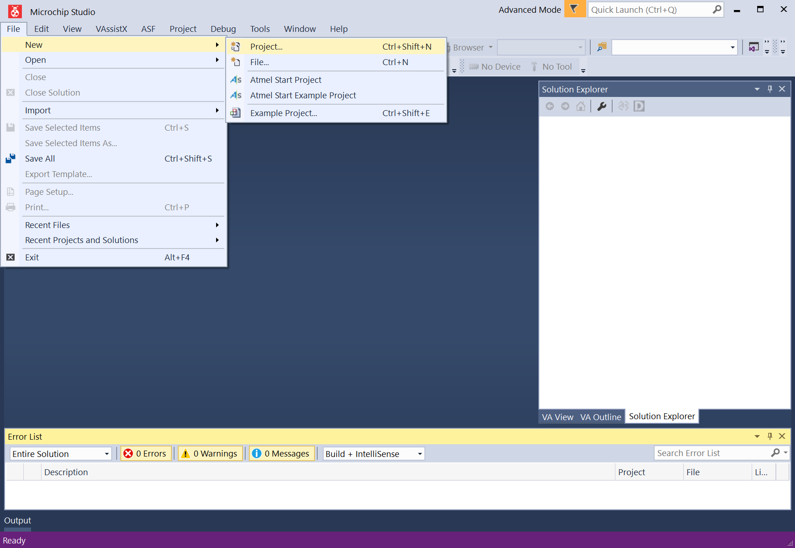
รูป: สร้างโปรเจกต์ใหม่ จากเมนูคำสั่ง New > File > Project...
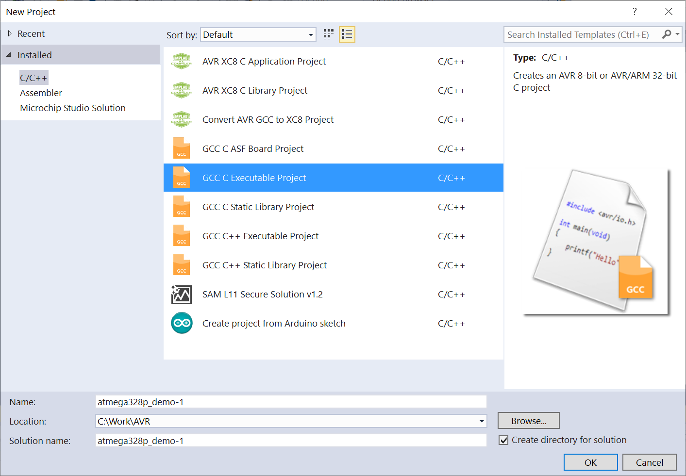
รูป: เลือก GCC C Executable Project และตั้งชื่อโปรเจกต์
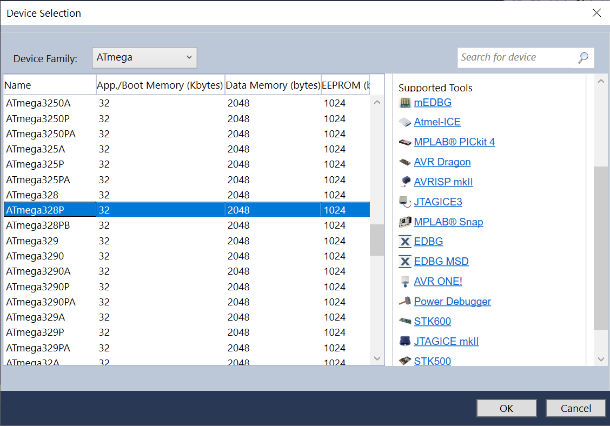
รูป: เลือกไมโครคอนโทรลเลอร์ตระกูล ATmega > ATmega328P
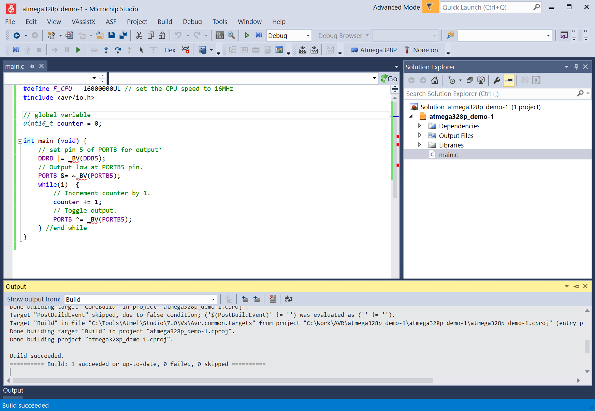
รูป: แก้ไขไฟล์ main.c ในโปรเจกต์ใหม่ เพื่อลองเขียนโค้ดตามตัวอย่าง
แล้วทำขั้นตอน Build > Build Solution เพื่อคอมไพล์โค้ดในโปรเจกต์
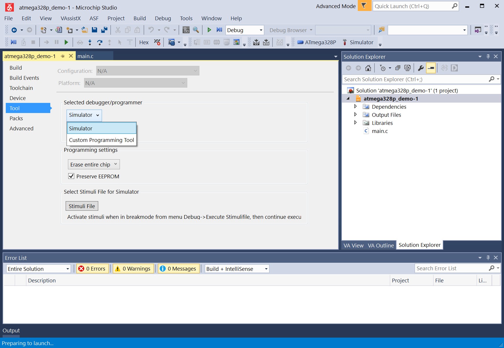
รูป: ทำขั้นตอน Debug > Start Debugging and Break
เพื่อเริ่มต้นการดีบักโปรแกรมโดยใช้ Tool > Simulator
เมื่อเข้าสู่ Debug Session ให้หยุดที่คำสั่งแรกในฟังก์ชัน main()
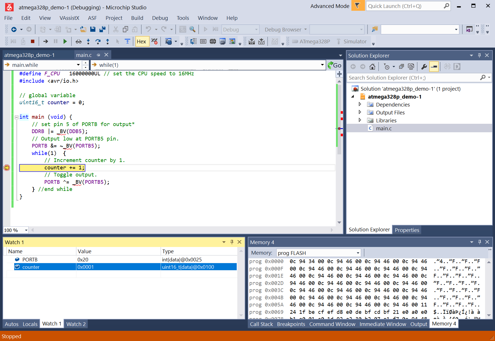
รูป: คลิกเลือกบรรทัดในโค้ดเพื่อใช้เป็นตำแหน่งของ Breakpoints แล้วลองรันโปรแกรมต่อไป (Continue)
จากรูปจะเห็นได้ว่า ผู้ใช้สามารถใช้ตัวจำลองการทำงาน (Simulator) รันโค้ดของโปรแกรมได้ ในหน้าต่าง Watch ผู้ใช้สามารถเพิ่มรายการสำหรับตัวแปร หรือ รีจิสเตอร์ของไมโครคอนโทรลเลอร์ เพื่อดูการเปลี่ยนแปลงค่าในขณะที่รันหรือดีบักโค้ดได้
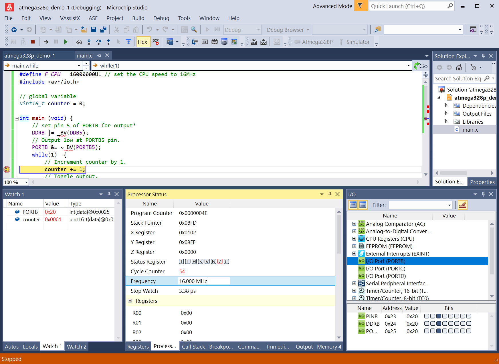
รูป: แสดงสถานะการทำงานของไมโครคอนโทรเลลอร์ เช่น Processor Status และ I/O เป็นต้น
ข้อดีของการดีบักด้วย Simulator ได้แก่
- กำหนดหมายเลขบรรทัดในโค้ด ให้เป็นตำแหน่งของ Breakpoint เพื่อหยุดการทำงานชั่วคราว หากทำคำสั่งมาถึงตำแหน่งดังกล่าว
- สามารถดูสถานะการทำงานภายในของไมโครคอนโทรลเลอร์ได้ เช่น ค่าของรีจิสเตอร์ต่าง ๆ ค่าของตัวแปรในหน่วยความจำ
- สามารถกำหนดค่าความถี่ของซีพียู เช่น 16MHz และดูค่าของ Stop Watch หรือ Cycle Counter ในการจับเวลาการทำงานเมื่อทำคำสั่งต่าง ๆ ในโปรแกรมได้
หากต้องการแปลงไฟล์ไบนารีที่ได้จากการคอมไพล์ซอร์สโค้ด ให้เป็นโค้ดภาษา AVR Assembly ก็ทำได้ดังนี้
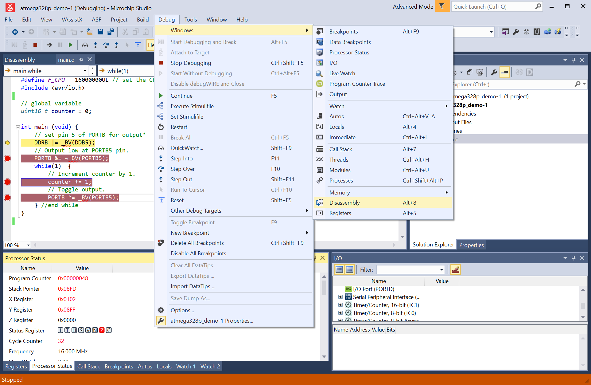
รูป: การเลือกเมนูเพื่อทำดูผลการแปลงไฟล์ Disassembly
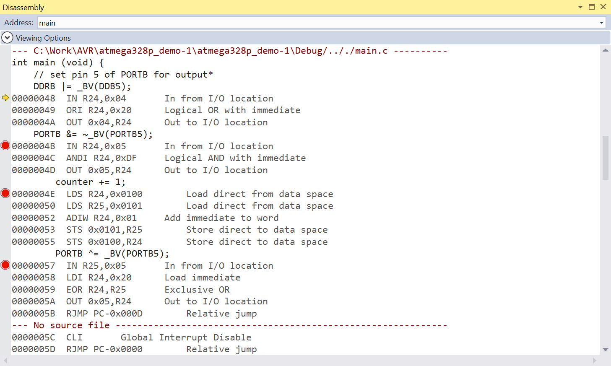
รูป: ตัวอย่างโค้ด (แสดงเฉพาะส่วนที่เป็นฟังก์ชัน main) ที่ได้จากการแปลงด้วยโปรแกรม AVR Disassembler
▷ การใช้งาน Wokwi AVR Simulator#
Wokwi AVR Simulator เป็นซอฟต์แวร์อีกตัวเลือกหนึ่งที่เป็น Open Source และใช้งานได้ฟรี เปิดเว็บเบราว์เซอร์ไปยัง https://wokwi.com/arduino/projects สำหรับเขียนโค้ดและดีบักการทำงานของบอร์ด Arduino
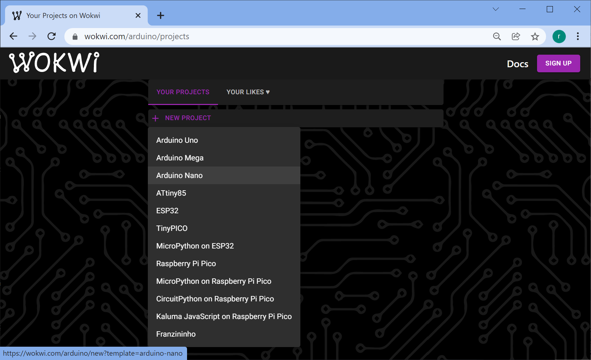
รูป: สร้างโปรเจกต์ใหม่ NEW PROJECT และเลือกบอร์ด Arduino อย่างเช่น Nano
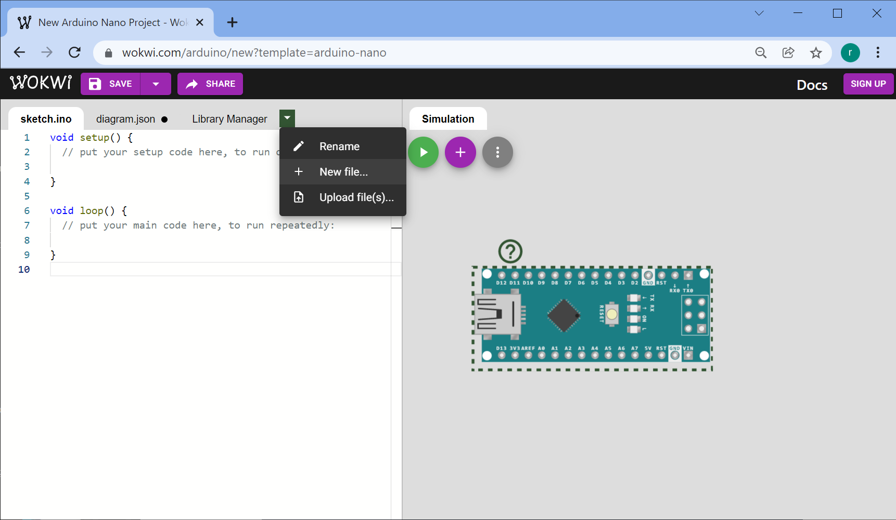
รูป: สร้างไฟล์ใหม่ New file... ตั้งชื่อไฟล์ใหม่เป็น main.c
และในไฟล์ sketch.ino ที่มีอยู่แล้ว ให้ลบโค้ดออก (ว่างเปล่า)
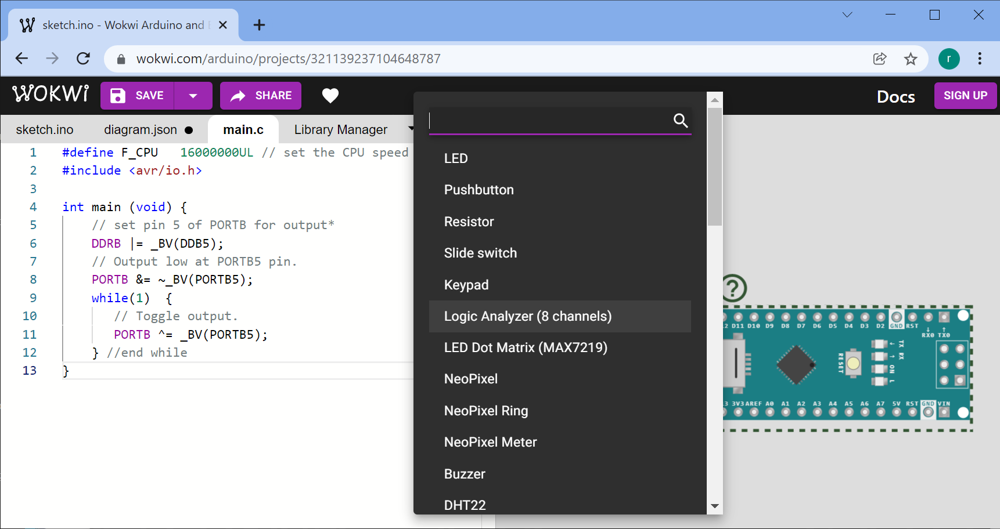
รูป: การต่อวงจรเสมือนจริง โดยเพิ่มอุปกรณ์ 8-Channel Virtual Logic Analyzer ในวงจร
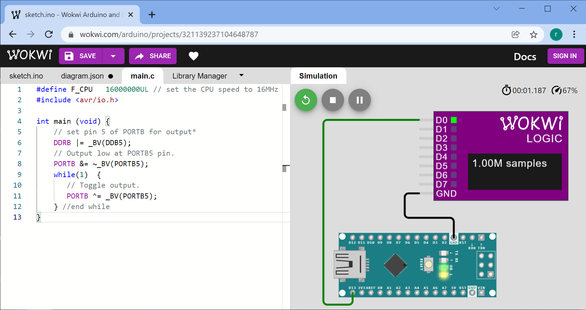
รูป: การเชื่อมต่อขาสัญญาณตามรูปตัวอย่าง เพื่อบันทึกการเปลี่ยนแปลงที่ขา D13 ของบอร์ด Arduino Nano
เมื่อ AVR Simulator เริ่มทำงาน จะมีการบันทึกการเปลี่ยนแปลงค่าลอจิก และเมื่อหยุดการจำลองการทำงาน
จะมีการดาวน์โหลดไฟล์ wokwi-logic.vcd มายังเครื่องคอมพิวเตอร์ของผู้ใช้โดยอัตโนมัติ
และใช้โปรแกรมอย่างเช่น GTKWave เปิดไฟล์ .vcd และแสดงข้อมูลเป็นรูปคลื่นสัญญาณ
รูป: การใช้โปรแกรม GTKWave แสดงรูปคลื่นสัญญาณดิจิทัล และวัดความกว้างพัลส์ช่วงที่เป็น HIGH เช่น ได้ความกว้าง 313 ns
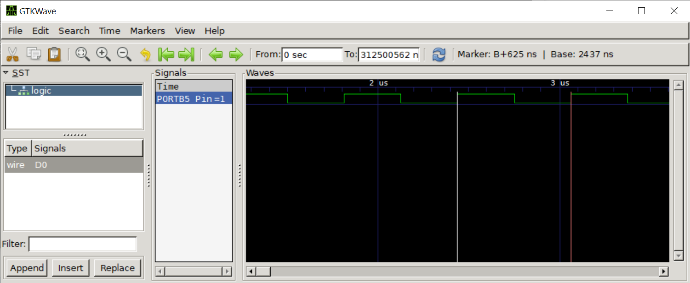
รูป: แสดงรูปคลื่นสัญญาณดิจิทัล และวัดความกว้างของคาบสัญญาณ เช่น ได้ความกว้างของคาบ 625 ns = 10 cycles x (1/16MHz) หรือคิดเป็นความถี่เท่ากับ 1.6MHz
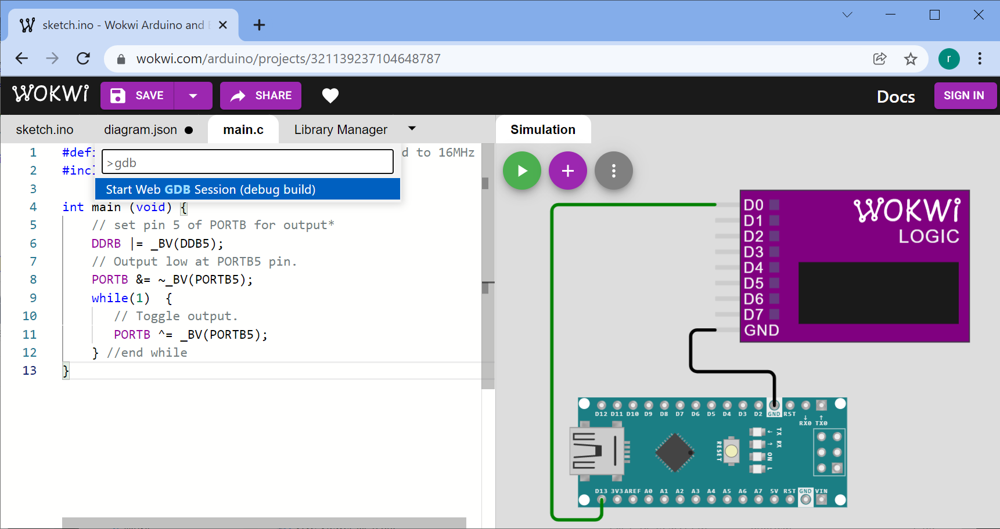
รูป: เรียกใช้งาน Web-based AVR-GDB (Debug Session) กดปุ่ม Fn + F1 แล้วพิมพ์ค้นหา gdb แล้วเลือกตามเมนูคำสั่ง จากนั้นจะเปิดหน้า Tab ใหม่ เพื่อเริ่มต้นใช้งาน Web GDB
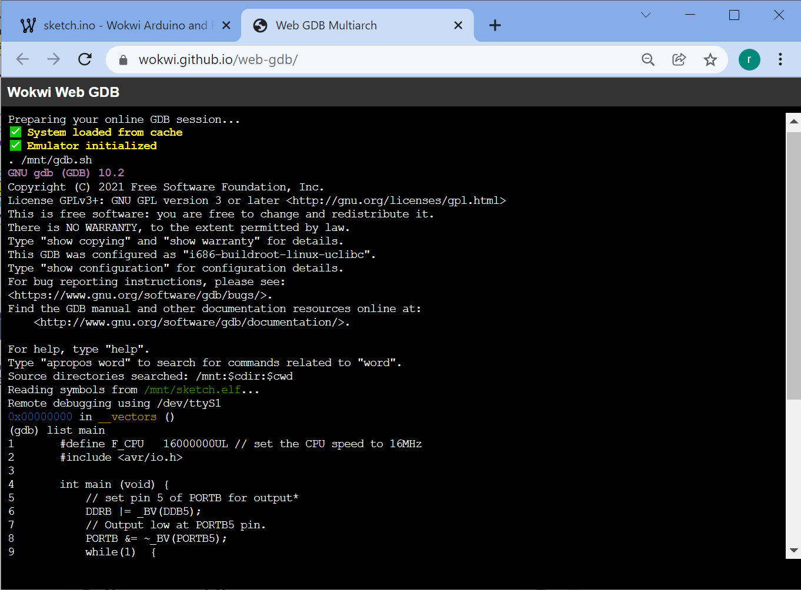
รูป: เริ่มต้นใช้งาน WokWi Web GDB
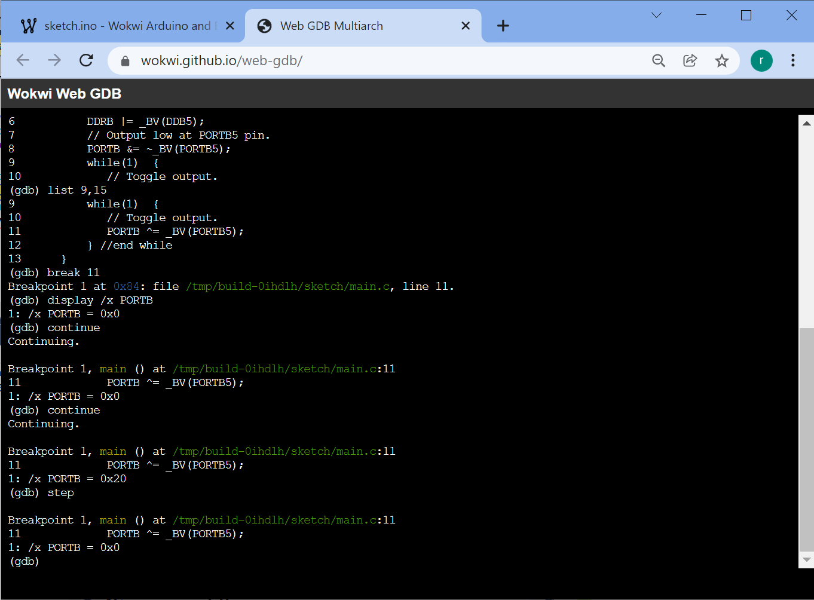
รูป: ตัวอย่างการทำคำสั่ง (gdb)
▷ กล่าวสรุป#
บทความนี้นำเสนอซอฟต์แวร์ ได้แก่ Arduino IDE, Microchip Studio IDE และ Wokwi Arduino Simulator ซึ่งเราสามารถนำมาใช้ในการเขียนโค้ดภาษา C/C++ สำหรับไมโครคอนโทรลเลอร์ AVR MCU เช่น ATmega328P (เป็นชิปที่ใช้กับบอร์ด Arduino Uno) และสามารถดีบักการทำงานของโค้ดได้ด้วย โดยใช้วิธีการจำลองการทำงาน เมื่อใช้โปรแกรมอย่างเช่น AVR GDB Debugger, Microchip Studio IDE หรือ Wokwi AVR Simulator (Web-based)
This work is licensed under a Creative Commons Attribution-ShareAlike 4.0 International License.
Created: 2022-01-17 | Last Updated: 2023-02-11